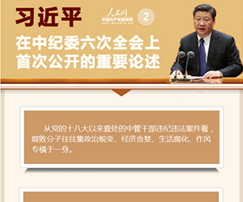

庆祝中国共产党建党九十五周年
 24小时服务热线：
123-456-7890
24小时服务热线：
123-456-7890
- 
信息联播
王辉忠：打造有铁一般信仰过硬政法队伍
2016年05月07日10:36 来源：浙江日报
原标题：打造有铁一般信仰过硬政法队伍
5月6日，全省政法队伍建设工作会议暨“两学一做”专题党课在杭州召开。省委副书记、政法委书记王辉忠在会上强调，要深入学习习近平总书记系列重要讲话精神，深入学习贯彻全国政法队伍建设工作会议精神和省委十三届九次全会、全省“两学一做”专题党课暨学习教育部署会精神，着眼于加强政法队伍建设、聚焦于完成G20杭州峰会维稳安保任务，努力实现抓工作、抓党建、抓队伍“三促进”“三提升”。袁家军、陈国猛、汪瀚参加会议。
王辉忠指出，今年是“十三五”开局之年，也是G20杭州峰会举办之年。关键时刻、非常时期，能否完成好光荣使命，党员的战斗力、队伍的凝聚力至关重要。全省各级政法机关党组织和全体党员干警要深刻把握“两学一做”学习教育的核心内涵，聚焦党章党规和铁规禁令，把纪律和规矩挺在前面，筑牢思想防火墙；聚焦习近平总书记关于政法工作的一系列重要论述、观点和指示，全面推进政法工作和政法队伍建设；聚焦争做“四讲四有”合格党员，主动到条件艰苦、困难较多、矛盾集中的地方破解难题，在深化学习教育中增强信心、激发动力，在完成重大任务中检验党性、锤炼队伍。
王辉忠强调，队伍建设中的短板所在就是“两学一做”学习教育的方向。各级政法机关要主动对标“七个绝对不允许”，突出“忠诚、担当、公正、荣誉、守纪”五大关键词，主动找短板、补短板，打造有铁一般信仰、铁一般信念、铁一般纪律、铁一般担当的过硬政法队伍。要层层落实责任，把党的思想政治建设抓在日常、严在经常，真正做到思想教育的方式要“新”，能力培养的角度要“准”，监督管理的体系要“严”，制度保障的力度要“强”，尽好责、抓到位、见实效。（记者 余勤 金春华）
 微信关注
微信关注